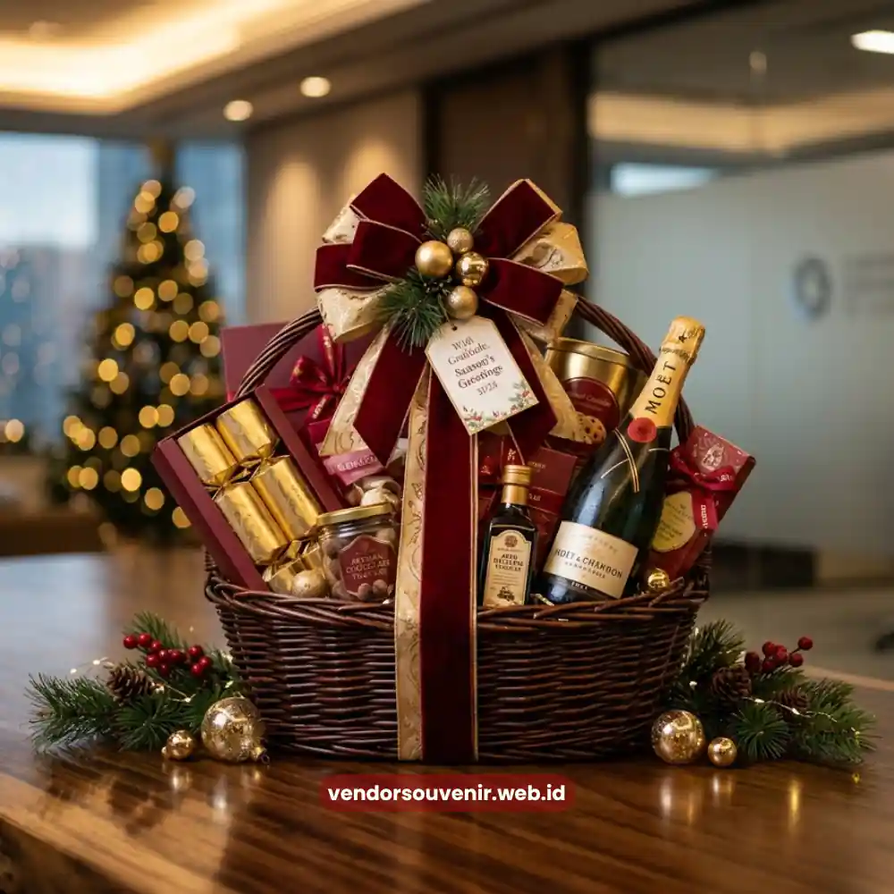
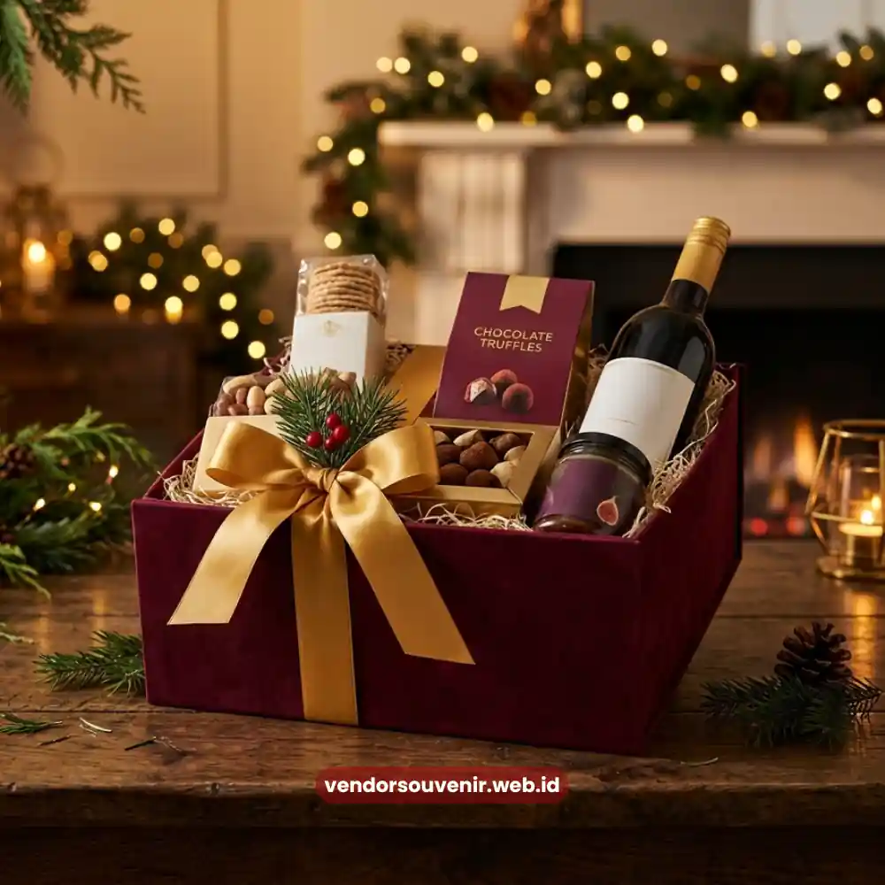

Daftar Isi
Momen terbaik untuk mengirim hampers apresiasi kepada klien bisnis adalah saat-saat yang memiliki makna khusus dalam perjalanan kerja sama.
Seperti menjelang pergantian tahun, setelah perpanjangan kontrak, pasca penyelesaian proyek besar, atau pada perayaan hari raya dan hari jadi perusahaan.
Pengiriman hampers yang selaras dengan momen tersebut membuat pesan apresiasi terasa lebih relevan dan tulus di mata klien.
Sebaliknya, hampers yang dikirim tanpa memperhatikan konteks waktu berisiko kehilangan dampaknya.
Sehingga dapat terkesan sebagai formalitas semata tanpa makna yang berarti bagi penerimanya.
Kapan Sebaiknya Perusahaan Mengirim Hampers kepada Klien?
Perusahaan sebaiknya mengirim hampers pada momen yang secara alami menandai pencapaian atau babak baru dalam hubungan bisnis.
Momen semacam ini memberi konteks yang jelas bagi klien mengenai alasan di balik pemberian hampers.
Sehingga apresiasi yang disampaikan terasa lebih personal dan sama sekali tidak generik.
Ketepatan waktu juga menunjukkan bahwa perusahaan benar-benar memperhatikan dinamika hubungan kerja sama.
Bukan sekadar menjalankan rutinitas tahunan yang diwajibkan oleh prosedur korporat.
Hampers Akhir Tahun sebagai Simbol Apresiasi Berkelanjutan
Akhir tahun menjadi salah satu momen paling umum digunakan perusahaan untuk mengirimkan hampers kepada klien.
Periode ini dianggap tepat karena bertepatan dengan evaluasi kerja sama sepanjang tahun berjalan.
Sekaligus menjadi kesempatan untuk menyampaikan harapan kolaborasi yang lebih baik di tahun berikutnya.
Hampers akhir tahun umumnya dirancang dengan nuansa perayaan yang hangat.
Namun tetap mempertahankan kesan profesional agar sesuai dengan konteks hubungan bisnis.
Pengiriman hampers pada periode ini juga membantu perusahaan tetap hadir dalam ingatan klien.
Terutama menjelang pengambilan keputusan kerja sama di tahun berikutnya.
Sehingga secara tidak langsung turut memperkuat posisi tawar perusahaan di mata klien.
Merayakan Perpanjangan Kerja Sama dengan Hampers Eksklusif
Momen perpanjangan kontrak atau kerja sama jangka panjang merupakan titik penting yang layak dirayakan bersama klien.
Pemberian hampers pada momen ini menjadi bentuk penghargaan atas kepercayaan yang kembali diberikan.
Sekaligus menegaskan komitmen perusahaan untuk terus memberikan pelayanan terbaik.
Hampers yang dikirimkan pada momen ini idealnya membawa kesan yang sangat eksklusif.
Mengingat tingginya nilai strategis dari keberlanjutan hubungan bisnis tersebut.

Hampers Eksklusif Perpanjangan Kontrak
Hampers sebagai Penguat Hubungan Setelah Proyek Besar Selesai
Penyelesaian proyek besar sering kali melibatkan proses panjang dan kerja sama yang intens antara perusahaan dan klien.
Mengirimkan hampers setelah proyek tersebut rampung menjadi cara yang tepat untuk mengapresiasi kolaborasi.
Terutama atas kepercayaan dan kerja sama yang telah terjalin selama proses berlangsung.
Momen ini juga membuka peluang untuk memperkuat hubungan jangka panjang secara efektif.
Sehingga klien merasa dihargai tidak hanya dari sisi hasil kerja yang telah diselesaikan.
Tetapi juga dari sisi hubungan personal yang telah terbangun bersama tim.
Bagaimana Momen Hari Raya Memengaruhi Kesan Apresiasi kepada Klien?
Momen hari raya keagamaan maupun hari jadi perusahaan juga menjadi kesempatan yang tepat untuk mengirim hampers.
Pada momen ini, hampers cenderung dimaknai sebagai bentuk perayaan sukacita bersama.
Bukan semata-mata hal yang terkait erat dengan sebuah transaksi bisnis harian.
Pemilihan waktu pengiriman yang sesuai dengan konteks perayaan tersebut turut memperkuat kesan baik.
Bahwa perusahaan menghargai klien secara personal, tidak hanya sebagai mitra transaksional semata.
Hal ini menjadikan hampers pada hari raya selalu diterima dengan rasa terima kasih yang mendalam.

Solusi Gift Set dari Vendor Terpercaya
Kesimpulan
Ketepatan momen menjadi salah satu faktor penentu keberhasilan hampers dalam menyampaikan pesan apresiasi.
Baik pada momen akhir tahun, perpanjangan kerja sama, penyelesaian proyek, maupun hari raya.
Setiap momen memiliki nilai tersendiri yang sungguh layak dirayakan bersama klien Anda.
Percayakan penyusunan dan pengiriman hampers apresiasi klien pada momen-momen penting tersebut kepada ahlinya.
Seperti halnya layanan yang ditawarkan secara eksklusif oleh Hampers Malang.
Agar setiap hampers yang terkirim benar-benar membekas dan memberi makna di hati klien Anda.
Rencanakan Hampers Apresiasi Klien Anda?
Kami siap membantu pengadaan corporate gift Anda untuk berbagai momen penting.
Konsultasikan desain logo dan pilihan box eksklusif Anda kepada tim kami.
Mari ciptakan impresi elegan yang tak terlupakan untuk mitra bisnis Anda.
Dapatkan penawaran harga terbaik untuk pesanan korporat!
FAQ
Kapan waktu paling umum perusahaan mengirim hampers ke klien?
Waktu yang paling umum dipilih adalah menjelang akhir tahun, saat perpanjangan kontrak, setelah penyelesaian proyek besar, serta pada momen hari raya dan hari jadi perusahaan.
Apakah hampers tetap relevan jika dikirim di luar momen khusus?
Hampers tetap dapat dikirim di luar momen khusus, namun pengiriman yang diselaraskan dengan momen tertentu umumnya memberikan kesan yang lebih bermakna dan personal bagi klien.
Bagaimana cara memastikan hampers akhir tahun sampai tepat waktu?
Perusahaan disarankan melakukan pemesanan lebih awal, mengingat periode akhir tahun biasanya menjadi masa dengan permintaan hampers yang tinggi sehingga waktu produksi dan pengiriman perlu diperhitungkan dengan matang.
Maroon Souvenir
Partner Corporate Gift terpercaya di Indonesia. Berpengalaman melayani ratusan perusahaan sejak 2018.
Lihat Portofolio Kami